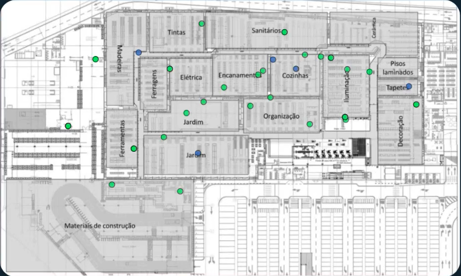

Arraste de uma ponta à outra da gôndola — um gesto por barra, não quatro cliques. A roda do mouse amplia onde o cursor está; arraste com o botão direito (ou segurando Espaço) para deslocar. Ctrl+Z desfaz a última. O departamento é reconhecido sozinho pelo lugar onde a gôndola cai.
